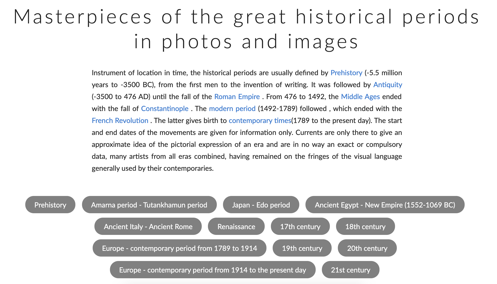
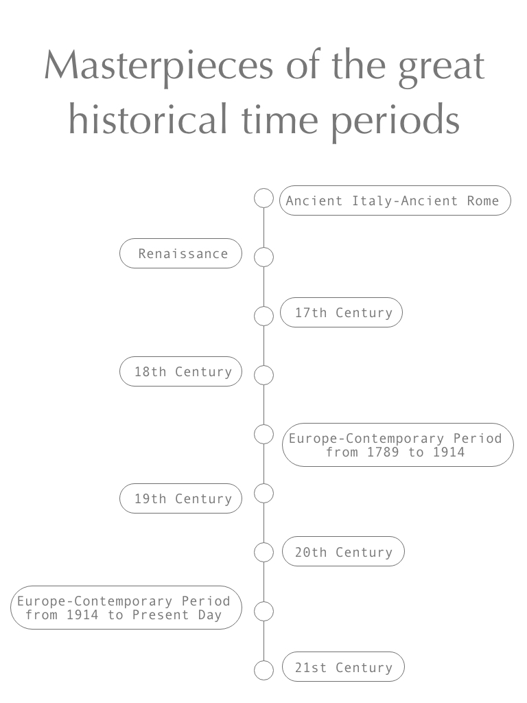

...
Write an update regarding your Collection Activation assignment (what further research have you done, what wireframes have you made, etc.)
Update for Collection Activation assignment: I have decided to focus my project as AR App used in classrooms for learning about history and culture. The database I am using sorts the paintings by time period and my app will allow the students to see the paintings where they are in their surrounds so they can learn about the artwork based on the time period. The users will also be able to add more contextual information with a notes feature in the app. One technical feature I have decided to work on is to make sure that the scale of the artwork is proportional to the space the user is in.
 